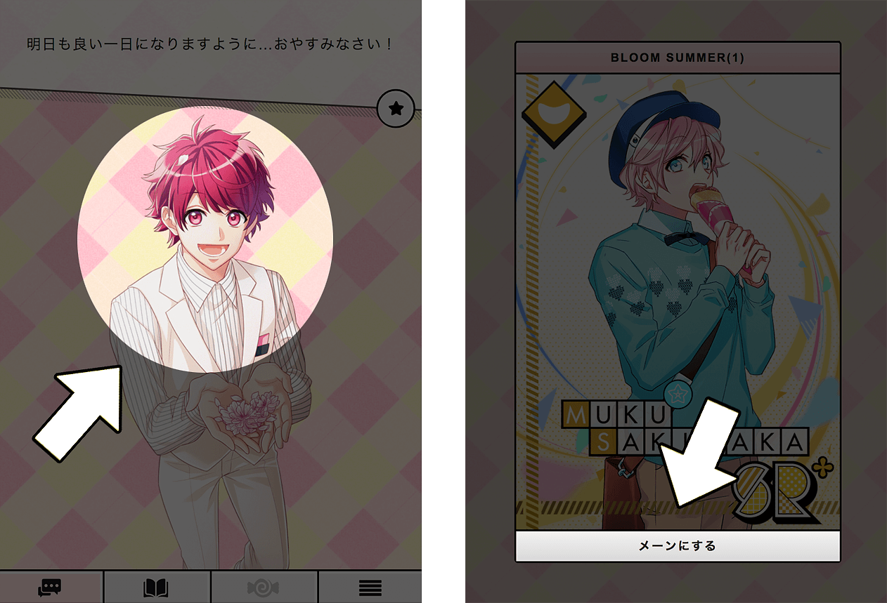
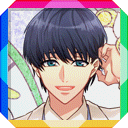
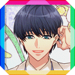
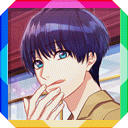
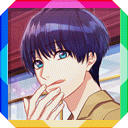
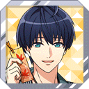
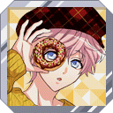
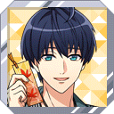
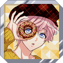

画面をタップしてください
つまり「マイページ」のアーカイブです
ブラウザのキャッシュを消したら、マイページも誕生日もリセットされます
サポートされているブラウザ » Chrome, Safari, Firefox
これはただの二次創作です。キャラの絵も声も「Liber Entertainment Inc」の知的財産です。著作権者はこのプロジェクトを消されたいなら、直接に「niconicosette」を連絡してください。揉めずに消されます → niconicosette@gmail.com
 


 



 


